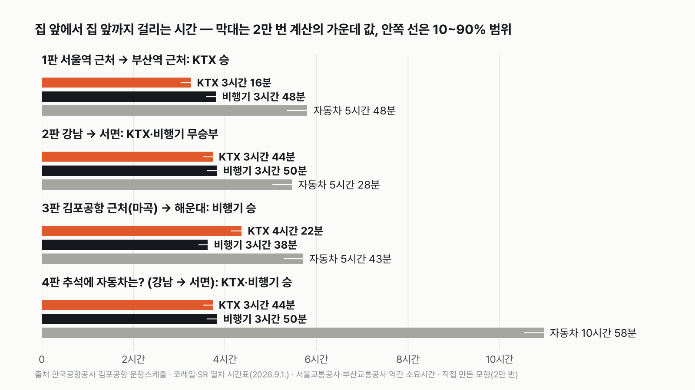
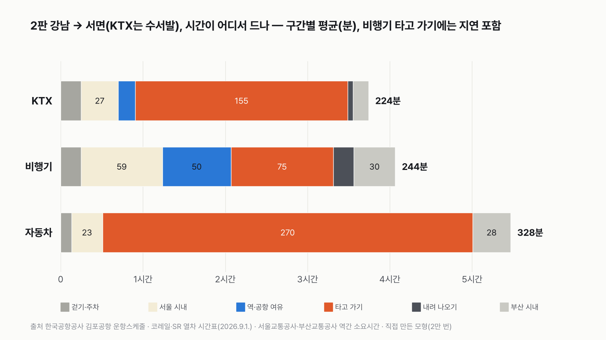
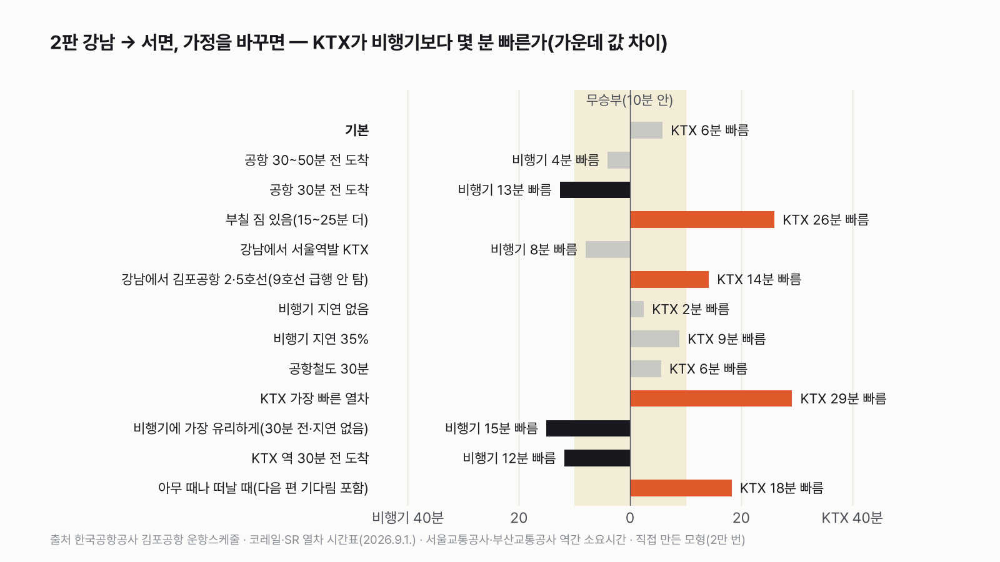
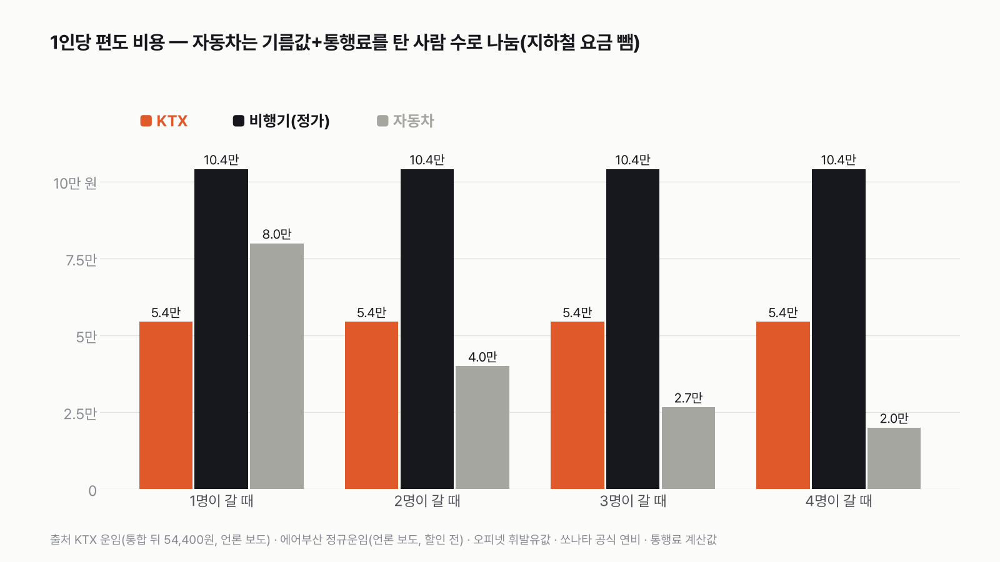

서울 집 앞에서 부산 집 앞까지, KTX와 비행기 중 뭐가 더 빠를까
결과를 보기 전에 먼저 골라 주세요. 투표하면 독자 예상과 데이터 결과를 나란히 보여 드려요.
독자 투표
- 서울 집에서 나와 부산 집 문 앞에 닿을 때까지, KTX와 비행기 중 어느 쪽이 빠를까요? 자동차도 같이 달려요.
- 한국공항공사 김포공항 운항 시간표, 코레일·SR 공식 열차 시간표, 서울·부산 지하철 역간 소요시간으로 집 앞부터 집 앞까지를 2만 번 계산했어요.
- 출발지·도착지를 바꾼 세 판과 추석 판까지 네 판으로 겨뤘어요. 투표하면 결과가 바로 아래에 열려요.
조건과 규칙
- 집 앞에서 집 앞까지를 재요. 집에서 역·공항까지 가는 시간, 미리 도착해 기다리는 시간, 타고 가는 시간, 내려서 집까지 가는 시간을 모두 더해요.
- 출발지와 도착지를 바꿔 세 판을 겨뤄요. 서울역 근처 → 부산역 근처, 강남 → 서면, 김포공항 근처 → 해운대예요. 넷째 판은 추석 귀성길에 자동차가 이길 수 있는지 봐요.
- 시간표는 공식 자료를 쓰고, 미리 도착하는 시간처럼 사람마다 다른 건 범위로 넣어 2만 번 계산해요.
- 판마다 가장 빠른 쪽이 이겨요. 두 쪽 차이가 10분 안이면 무승부예요.
결과 요약
- 어디 사느냐가 정해요. 서울역 근처면 KTX가 33분, 김포공항 근처면 비행기가 44분 빨라요. 강남은 사실상 접전이에요. 수서발 KTX가 6분 앞서 무승부예요.
- 세 판 성적은 KTX 1승 1패 1무, 최종 무승부예요. 65분 비행으로 번 시간을 공항이 거의 다 가져가요. 공항에 미리 가 있는 시간, 공항까지 더 먼 길, 내려서 빠져나오는 시간이 쌓여서예요.
- 강남 판은 몇 분 일찍 가느냐로 갈려요. 공항에 30분 전 딱 맞춰 가면 비행기가 13분 빨라요. 부칠 짐이 있거나 아무 때나 떠나면 KTX가 앞서요. 자동차는 평소에도 1시간 반 넘게 늦고, 추석 귀성길엔 7시간 넘게 늦어요.
그래서? 역이 가까우면 KTX, 공항이 가까우면 비행기예요. 애매하면 KTX가 마음 편해요. 표가 비행기 정규 요금의 반값이고 더 자주 있어요.
독자 예상 vs 데이터 결과
서울 집 앞에서 부산 집 앞까지, KTX와 비행기 중 뭐가 더 빠를까?
데이터 결과: 무승부. 데이터 결과는 무승부예요. 서울역 근처면 KTX, 김포공항 근처면 비행기, 강남은 6분 차 접전이에요. 공항에 30분 전 딱 맞춰 가면 비행기, 짐이 있거나 아무 때나 떠나면 KTX가 앞서요.


| 판 | KTX | 비행기 | 자동차 | 승자 |
|---|---|---|---|---|
| 1판 서울역 근처 → 부산역 근처 | 3시간 16분 | 3시간 48분 | 5시간 48분 | KTX(33분 차) |
| 2판 강남 → 서면(KTX는 수서발, 비행기는 9호선 급행) | 3시간 44분 | 3시간 50분 | 5시간 28분 | 무승부(6분 차) |
| 3판 김포공항 근처(마곡) → 해운대 | 4시간 22분 | 3시간 38분 | 5시간 43분 | 비행기(44분 차) |
| KTX vs 비행기(1~3판) | 1승 1패 1무, 무승부 | |||
| 4판 추석에 자동차는?(강남 → 서면) | 3시간 44분 | 3시간 50분 | 10시간 58분 | KTX·비행기(7시간 14분 차) |
KTX·비행기의 추석 변수(매진, 공항 혼잡)는 0으로 뒀어요.
계산하면서 저도 놀랐어요. 65분 비행으로 번 시간을 공항이 거의 다 가져가더라고요. 강남에서 서면으로 가는 2판을 보면, 비행기는 타고 가는 시간이 KTX보다 80분 짧아요. 그런데 공항에 미리 가 있는 시간이 37분 더 들어요. 김포공항까지 가는 길이 24분, 김해공항에서 서면까지가 19분 더 걸려요. 내려서 공항을 빠져나오는 시간도 11분 더 걸려요. 이걸 다 빼면 비행기가 평균 11분, 가운데 값으로 6분 뒤져요.
이 규칙과 가정이면 KTX와 비행기는 비겨요. 서울역 근처에서는 KTX, 김포공항 근처에서는 비행기가 이겼고, 강남은 6분 차로 무승부예요. 자동차는 네 판 모두 가장 늦었어요.
1판 서울역 근처 → 부산역 근처: KTX 승(33분)
역 가까이 사는 사람에게 KTX는 거의 반칙이에요. 집에서 서울역까지 걷고, 열차에서 내리면 바로 부산역이에요. 3시간 16분이면 문 앞이에요. 비행기는 서울역에서 공항철도로 김포공항까지 가요. 공항에서 기다리고, 김해공항에서 경전철과 지하철을 갈아타 부산역까지 와야 해요. 그래서 3시간 48분이 걸려요. 2만 번 가운데 90%에서 KTX가 빨랐어요.
2판 강남 → 서면: 무승부(6분)
가장 흔한 경우에 가까운 판이에요. 강남에서는 수서역이 가까워요. 지하철로 15분 남짓이에요. 김포공항은 신논현역에서 9호선 급행을 타면 33분이에요. 부산에서는 부산역에서 서면이 8분, 김해공항에서 서면이 경전철과 지하철로 19분 남짓이에요. 다 더하면 수서발 KTX 3시간 44분, 비행기 3시간 50분이에요. KTX가 6분 앞서 무승부예요. 2만 번 가운데 70%에서 KTX가 빨랐어요.


강남 판은 길 하나만 바꿔도 결과가 달라져요. 9호선 급행 대신 2·5호선으로 김포공항에 가면 KTX가 14분 앞서 KTX 승이에요. 반대로 KTX를 수서 대신 서울역에서 타면 지하철이 4분 더 걸리고, 열차도 가운데 값이 8분 길어요. 그러면 비행기가 8분 앞서지만 여전히 무승부예요.
3판 김포공항 근처(마곡) → 해운대: 비행기 승(44분)
반대로 공항 가까이 살면 비행기가 쉽게 이겨요. 마곡에서 김포공항까지 지하철 한 정거장이면 돼요. 해운대는 김해공항에서 부산역보다 조금 더 멀 뿐이에요. 비행기는 3시간 38분이에요. KTX는 공항철도로 서울역까지 거꾸로 가야 해서 4시간 22분이에요. 44분 차이로 비행기가 이겼어요.
4판 추석에 자동차는?(강남 → 서면): KTX·비행기 승, 자동차 7시간 늦음
자동차는 평소에도 세 판 모두 가장 늦어요. 집 앞에서 바로 출발하고 기다리는 시간도 없지만, 고속도로만 4시간 반 안팎이 걸려요. 고속도로를 4시간에 달리는 운 좋은 날로 잡아도 강남에서 서면까지 5시간 가까이 걸려요.
추석엔 그 차이가 벌어져요. 국토교통부는 2026년 추석 귀성길 서울→부산을 최대 10시간 30분으로 내다봤어요. 9월 24일 오전 9시에는 실제로 9시간 30분이 걸렸어요. 이 값을 넣으면 자동차는 집 앞에서 집 앞까지 10시간 58분이에요. 가장 막히는 시간대의 숫자예요. 수서발 KTX보다 7시간 14분 늦어요.


판정이 뒤집히는 조건
최종 무승부는 강남 판에 걸려 있어요. 강남 판이 기울면 최종도 같은 쪽으로 기울어요.
- 공항에 출발 30분 전 딱 맞춰 가면 비행기가 13분 빨라요. 최종은 비행기 2승 1패, 비행기 승이에요.
- 부칠 짐이 있어 짐 찾는 데 15~25분 더 들면 KTX가 26분 앞서요. 최종은 KTX 승이에요.
- 아무 때나 떠나서 다음 편을 기다리는 시간까지 넣으면 KTX가 18분 빨라요. 최종은 KTX 승이에요.
비행기 지연 비율을 0%에서 35%까지 바꿔도, 공항철도를 30분으로 늘려도, 공항에 30~50분 전에 도착해도 강남 판은 무승부 그대로예요. 1판은 어떤 가정에서도 KTX, 3판은 어떤 가정에서도 비행기였어요.
아무 때나 떠날 때 KTX가 유리한 건 열차가 자주 있어서예요. 수요일 기준 서울역발 부산행 KTX는 55편, 수서발은 34편이에요. 김포→김해 비행기는 25편이고 출발 간격이 평균 33분, 길면 1시간이 넘어요.


덤: 1인당 비용
시간 차이보다 돈 차이가 더 커요. KTX 일반실은 서울역발 54,400원, 수서발 52,900원이에요. 비행기는 정규 요금이 약 10만 원이에요. 할인 요금으로 사면 더 싸게 탈 수 있어요. 자동차는 기름값 약 6만 800원과 통행료 약 1만 9천 원을 합쳐 한 대에 약 8만 원이에요. 혼자면 KTX보다 비싸요. 둘만 타도 1인당 4만 원으로 가장 싸고, 넷이면 2만 원이에요. 대신 시간이 1시간 반 넘게 더 들어요.
이 숫자는 어디서 왔나요
출처
기준일 비행기 시간표는 2026년 11월 8일 한국공항공사에서 조회했어요. KTX는 2026년 9월 1일부터 쓰는 공식 시간표의 수요일 운행분이에요. 조건은 2026년 11월 8일, 계산하기 전에 정했어요. 검토 뒤 바꾼 것은 아래 '쓰기 전에 정한 것'에 적었어요.
한국공항공사 김포국제공항 운항스케줄(2026-11-08 조회)
- 김포→김해 운항 스케줄
하루 25편, 06:50~20:10 출발, 시간표상 65~75분
한국공항공사 출발장 안내
- 국내선 탑승수속 마감
"국내선은 보통 출발 30분 전까지"
코레일·SR 누리집 '열차운임 및 시간표'(공공데이터포털 15154727)
- 경부선 KTX 시간표(2026.9.1.~)
수요일 서울역→부산역 55편, 수서→부산 34편
서울교통공사(서울열린데이터광장)
- 서울 지하철 역간 소요시간
강남→서울역 19.5분, 강남→수서 15.5분, 강남→김포공항(2·5호선) 40.2분
서울시메트로9호선 누리집
- 9호선 열차시각표(평일, 2026-11-16 적용)
급행 김포공항→신논현 33분, 낮 급행 간격 약 11분
부산교통공사(공공데이터포털), 부산김해경전철
- 부산 지하철·경전철 소요시간
부산역→서면 7.7분, 부산역→해운대 31.4분, 김해공항→사상 6분 49초
국토교통부(정책브리핑, 2026-09-22)
- 추석 고속도로 예측
귀성 서울→부산 최대 10시간 30분
한국도로공사 예상치(언론 보도)
- 평소 서울→부산 소요, 추석 실제
평소 약 4시간 30분, 9월 24일 9시 9시간 30분
한국공항공사·인천국제공항공사 집계(언론 보도)
- 국내선 지연 비율
2023~2025년 상반기 22.3%
코레일·SR 열차 운임표(2026.9.1.~), 에어부산 정규운임(언론 보도), 오피넷 휘발유값(언론 보도), 현대차 쏘나타 공식 연비
- 요금·연비
1인당 비용(판정 밖)
어떻게 셌나요
- KTX: 출발 10~15분 전에 역에 도착한다고 봤어요. 타는 시간은 그날 떠나는 열차 가운데 하나를 고르게 골랐어요. 서울역발은 2시간 18분~3시간 25분, 수서발은 2시간 11분~3시간 3분이에요. 내려서 역 밖까지 3~5분이에요.
- 비행기: 출발 40~60분 전에 공항에 도착한다고 봤어요. 한국공항공사 안내로 수속은 보통 출발 30분 전에 끝나고, 그 뒤 보안검색과 탑승구까지 가는 시간을 더한 범위예요. 역(10~15분)보다 공항(40~60분)을 넉넉히 잡은 게 비행기에 불리한 가정이라, 공항 30~50분 전 도착으로도 따로 계산했어요.
- 비행기는 김포공항역에서 출발장까지 5~10분 걷고, 시간표의 25편 가운데 하나를 타요. 대부분 65분이에요. 22.3% 확률로 15~60분 늦게 도착해요. 부칠 짐이 없다고 보고 내려서 공항 밖까지 10~20분이에요.
- 지하철: 서울교통공사·부산교통공사 공식 역간 소요시간을 썼어요. 탈 때마다 열차를 2~5분 기다리고, 갈아탈 때마다 3~6분 걸어요. 집과 역 사이 걷기는 끝마다 5~10분이에요.
- 강남에서 김포공항은 9호선 급행으로 가요. 강남역 근처 집에서 신논현역까지 0~8분 더 걷고, 급행을 1~11분 기다려 33분 타요. 급행 33분은 운영사 시각표에서 같은 열차를 김포공항부터 신논현까지 역마다 따라가 잰 값이에요. 2·5호선으로 가는 경우는 따로 계산했어요.
- 공항철도: 서울역에서 김포공항까지 20~25분으로 가정했어요. 운영사 시간표를 확인하지 못한 값이에요. 30분으로 늘려도 판정은 같아요.
- 자동차: 고속도로 구간은 평소 4시간~5시간, 추석은 9시간 30분~10시간 30분이에요. 집에서 고속도로 요금소까지 도시 구간은 끝마다 15~45분으로 넣었어요.
- 시간표에 맞춰 집을 나선다고 봤어요. 아무 때나 떠날 때(다음 편을 기다리는 시간까지)는 따로 계산했어요.
- 판마다 2만 번 계산한 시간의 가운데 값으로 겨뤄요. 두 쪽 차이가 10분 안이면 무승부예요.
한계 7가지
이 데이터로 말할 수 없는 것
- 열차 시간표는 2026년 9월 1일부터 쓰는 공식 파일의 수요일 운행분이에요. 그 뒤 바뀐 열차는 반영하지 못했어요. 코레일 승차권 조회 화면은 자동 조회 도구를 막는 안내가 떠서 쓰지 않았어요.
- 비행기 운항 요일은 공항공사 표에서 읽지 못해 25편이 모두 매일 뜬다고 봤어요. 실제로 덜 뜨는 날은 비행기의 대기 시간이 늘어요.
- 지연 비율 22.3%는 국내선 전체 값(언론 보도)이에요. 김포→김해 노선만의 값은 찾지 못했어요.
- 공항·역에 미리 도착하는 시간, 지하철 기다림, 걷는 시간은 사람마다 달라요. 공식 기준이 없는 값이라 범위로 넣었고, 판정이 이 값에 민감하다는 걸 위에서 보여 드렸어요.
- 공항철도 서울역~김포공항 시간(20~25분), 마곡에서 김포공항까지 한 정거장(4분), 자동차의 도시 구간은 공식 자료로 확인하지 못한 가정이에요.
- 9호선 급행 33분은 김포공항→신논현 방향 시각표로 잰 값이에요. 급행은 김포공항에서 끝나 반대 방향 시각표로는 잴 수 없어서, 강남→김포공항도 같은 시간이 걸린다고 봤어요. 강남역 근처 집에서 신논현역까지 더 걷는 시간(0~8분)도 가정이에요.
- 고속도로 평소 4시간 30분, 통행료, 비행기 요금은 언론 보도와 계산 사이트 값이에요. KTX 요금만 공식 운임표로 확인했어요. 비용은 판정에 쓰지 않았어요.
다음 대결
대결 다 보기실험맨 vs 고양이 그루밍
실험맨 vs 고양이, 세 판 승부로 하루 씻고 꾸미는 시간이 더 긴 쪽은 누굴까?
A실험맨vsB고양이
투표하러 가기
대결실험맨투표했어요기린 승고3 vs 기린
고3 실험맨과 기린, 하루에 누가 더 적게 잘까?
A고3vsB기린
투표하러 가기
대결실험맨투표했어요60세 이상 승60세 이상 vs 20대
60세 이상 여성 실험맨과 20대 여성 실험맨, 하루 사람을 만나 어울리는 시간은 누가 더 길까?
A60세 이상 여성vsB20대 여성
투표하러 가기
대결실험맨투표했어요결과: 절반 넘는다실험맨 vs 혼밥
50대 남성 실험맨, 저녁을 대체로 가족과 함께 먹는 사람이 100명 중 절반을 넘을까?
A절반 넘는다vsB절반 못 넘는다
투표하러 가기
대결실험맨투표했어요결과: A실험맨 vs 월세
서울에 혼자 사는 20대 여성 실험맨, 작은 오피스텔 월세가 월급의 3분의 1을 넘을까?
A3분의 1 못 넘는다vsB3분의 1 넘는다
투표하러 가기
대결실험맨투표했어요결과: B실험맨 vs 결혼식
30대 신혼부부 실험맨, 둘이 석 달 번 돈으로 결혼식 하루 비용을 낼 수 있을까?
A석 달이면 낸다vsB석 달로는 모자란다
투표하러 가기
대결실험맨투표했어요결과: B실험맨 vs 집안일
30대 여성 실험맨의 1년 집안일, 돈으로 바꾸면 1년 번 돈보다 클까?
A집안일 값이 더 크다vsB번 돈이 더 크다
투표하러 가기
대결실험맨투표했어요무승부실험맨 vs 등록금
20대 여성 실험맨이 1년 동안 영상·SNS 보는 시간, 최저시급으로 치면 대학 1년 등록금을 넘을까?
A넘는다vsB못 넘는다
투표하러 가기
새 글 나오면 받아 보기
피드 리더 앱에 이 사이트 주소를 한 번 넣어 두면, 새 글이 올라올 때 앱에 떠요. 가입이나 메일 주소는 필요 없어요.
받는 법 보기
- 피드 리더 앱을 하나 골라요. 새 글을 모아 보여 주는 앱이에요. 예를 들면 Feedly나 Inoreader가 있어요. 둘 다 무료고 웹·휴대폰에서 써요.
- 앱에서 '구독 추가'(+)를 누르고 아래 주소를 붙여 넣어요.
- 끝이에요. 새 글이 올라오면 앱 목록에 떠요.
https://protofu.github.io/opendata-insight/feed.xmlFeedly를 쓴다면 여기를 눌러 바로 추가할 수도 있어요.